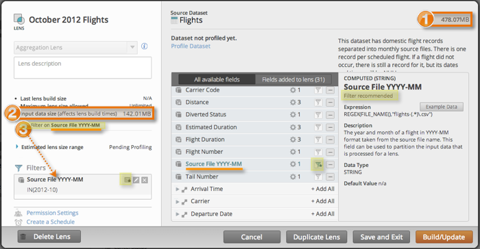

Lens input size estimates reflect how much source data will be scanned in the very first stage of a lens build. Lens input size estimates are available on all datasets (event datasets that have not been profiled yet). Input size estimation is applicable to all lens types.

- Platfora can estimate the total size of a dataset by looking at the source files in the Hadoop data source location. You do not need to profile a dataset to estimate the dataset size.
- The size of the input data can be reduced if the lens has input partitioning fields.
- The partitioning fields of a dataset are denoted with a special filter icon
 . Not all datasets
will have partitioning fields, but if they do, the names of those fields will be shown under
the Input data size.
. Not all datasets
will have partitioning fields, but if they do, the names of those fields will be shown under
the Input data size.